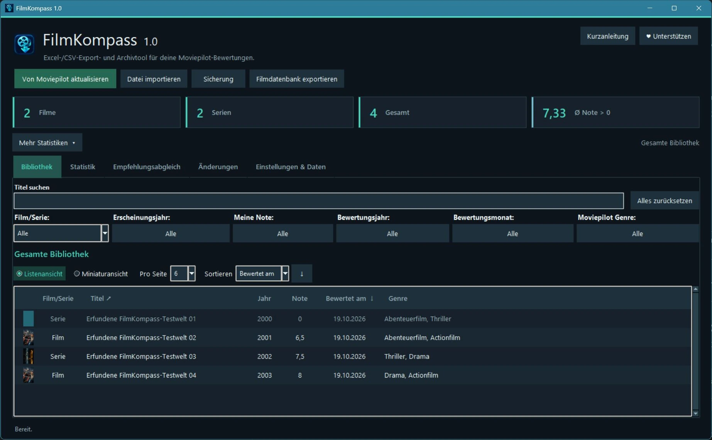
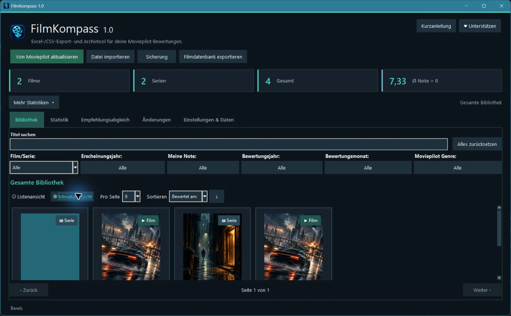
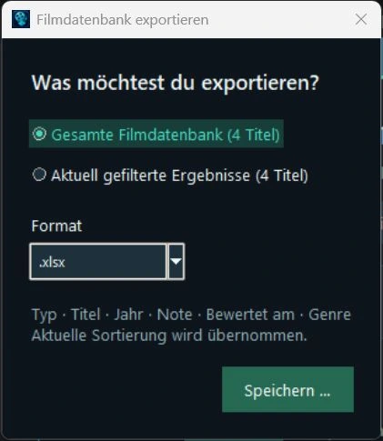

DEINE BEWERTUNGSLISTE. DEINE DATEI.
Moviepilot-Bewertungen herunterladen und nach Excel exportieren
Du möchtest deine Moviepilot-Bewertungen sichern oder deine Filme und Serien in Excel durchsehen? Diese Anleitung führt dich vom öffentlichen Profil bis zur fertigen XLSX- oder CSV-Datei – mit FilmKompass 1.1.
↓ FilmKompass für Windows herunterladenKostenlos · Windows 11 (64-Bit) getestet · Kein Python erforderlich. Weitere Systemhinweise
Neu in FilmKompass 1.1
Filmlisten → „Liste importieren“ speichert unterstützte öffentliche URLs getrennt von deinen Bewertungen. Der Bibliotheksvergleich zeigt vorhandene eigene Noten; Quellen lassen sich direkt öffnen. Empfehlungsabgleich prüft eingefügte Titel. Kein freier Vergleich zweier beliebiger Listen.
Miniaturen in Klein, Mittel und Groß; optional Fanart.tv einmalig mit persönlichen API Key lokal einrichten. Automatik aktivieren, pausieren und fortsetzen. Eigene Bilder haben Vorrang, Genreillustrationen sind Ersatzmotive. Keine Filmplakate im Download enthalten.
Programmupdates: freiwillig manuell oder höchstens täglich, standardmäßig aus. Bibliotheksreset entfernt auch gespeicherte Listen und erhält Einstellungen. Vollständiges Appdatenlöschen erstellt vorher automatisch eine geprüfte externe Sicherung im tatsächlichen Dokumenteordner unter FilmKompass/Sicherungen. Bei Fehler wird nichts gelöscht. Externe Archive und Bilddateien für Gerätewechsel sicher verwahren; sie können private Daten enthalten.
Version 1.1 ist veröffentlicht. Funktionsvorschau und Grenzen.
Was kann FilmKompass von Moviepilot herunterladen?
FilmKompass übernimmt öffentlich sichtbare Bewertungen von Filmen und Serien aus deinem Moviepilot-Profil. Deine persönliche Bewertungssammlung wird zur lokalen Bibliothek, die du durchsuchen, filtern und exportieren kannst.
„Moviepilot Download“ bedeutet hier ausschließlich den Abruf von Bewertungsinformationen. Es werden keine Filme oder Videos heruntergeladen. Ab Version 1.1 können unterstützte öffentliche Filmlisten separat gespeichert und mit der eigenen Bibliothek verglichen werden. Nicht jede Liste ist zugänglich; HTTP 403 wird respektiert. Der aktuelle Download ist FilmKompass 1.1.
Das brauchst du für den Export
- Einen Windows-PC; Windows 11 (64-Bit) ist getestet. Windows 10 (22H2, 64-Bit): Voraussichtlich lauffähig. Ein vollständiger Funktionstest steht noch aus.
- Die kostenlose portable Windows-Version von FilmKompass 1.1.
- Ein Moviepilot-Profil mit öffentlich sichtbaren Film- oder Serienbewertungen.
- Eine Internetverbindung, um die Bewertungen abzurufen.
Eine separate Python-Installation oder Administratorrechte brauchst du nicht. Für den normalen Profildownload ist keine Browseranmeldung erforderlich.
Schritt für Schritt: Moviepilot-Bewertungen nach Excel oder CSV exportieren
FilmKompass herunterladen
Nutze den offiziellen Windows-Download aus dem Release v1.1.0. Die Datei heißt
FilmKompass-1.1-Windows-portabel.zip.ZIP vollständig entpacken
Entpacke die gesamte ZIP-Datei in einen Ordner.
_internalgehört zum Programm und muss nebenFilmKompass.exebleiben. Kopiere die EXE nicht einzeln heraus.Die EXE ist derzeit unsigniert. Verwende die offizielle Bezugsquelle und vergleiche bei Bedarf die SHA-256-Prüfsummen. Windows-Sicherheitsfunktionen müssen dafür nicht pauschal deaktiviert werden.
FilmKompass starten
Öffne
FilmKompass.exeim entpackten Ordner. Bei der ersten Nutzung ist die Bibliothek leer. Bereits vorhandene lokale Daten werden weiterverwendet.Bewertungen bei Bedarf öffentlich sichtbar machen
Wenn deine Bewertungen privat sind, aktiviere in deinen Moviepilot-Profileinstellungen vorübergehend „Meine Bewertungen öffentlich zeigen“.
Während dieser Freigabe können auch andere Personen deine Bewertungen sehen. Ein normaler Login im Browser allein macht private Bewertungen nicht für den Standarddownload zugänglich.
„Von Moviepilot aktualisieren“ wählen
Klicke oben im Programm auf Von Moviepilot aktualisieren. Der Profilhinweis erklärt vor dem Abruf noch einmal die öffentliche Sichtbarkeit.
Profilnamen oder unterstützten Profillink eingeben
Gib deinen Moviepilot-Benutzernamen oder deinen Moviepilot-Profillink ein. Klicke anschließend auf Download starten. Dein Moviepilot-Passwort wird für diesen normalen HTTPS-Abruf nicht benötigt.
Bewertungen laden und die Bibliothek kontrollieren
Warte auf den Abschluss des Downloads und prüfe deine Film- und Serientitel. FilmKompass zeigt den Seitenfortschritt an und prüft den Abruf auf Vollständigkeit. Bei einer Fehlermeldung den Hinweis prüfen; ein fehlgeschlagener oder verdächtig unvollständiger Abruf ersetzt die vorhandene Bibliothek nicht.

Die Bibliothek nach dem Import: echte Programmaufnahme mit erfundenen Beispieldaten. Zum Vergrößern anklicken. Bei Bedarf suchen und filtern
Du kannst nach Titeln suchen oder nach Film/Serie, Erscheinungsjahr, Meine Note, Bewertungsjahr, Bewertungsmonat und Moviepilot Genre filtern. Zum Beispiel lässt sich nur die gewünschte Auswahl an Filmen anzeigen. Der spätere Exportumfang bleibt eine eigene Auswahl.
Mehr zu Kombinationen, Genres und Sortierung: Funktionen und Filter.

Suche und Filter stehen auch in der Miniaturansicht bereit. Vorhandene echte Aufnahme mit erfundenen Beispieldaten. Als Excel/XLSX oder CSV exportieren
Klicke auf Filmdatenbank exportieren. Wähle die gesamte Filmdatenbank oder die aktuell gefilterten Ergebnisse. Unter Format wählst du
.xlsxfür Excel oder.csv. Mit Speichern … öffnest du den Speicherdialog.Der Moviepilot Excel Export enthält numerische Noten und echte Datumszellen. Beide Formate enthalten dieselben sechs Felder: Typ, Titel, Jahr, Note, Bewertet am und Genre. Eine gefilterte Datei enthält nur deine ausgewählten Treffer.

Echter FilmKompass-Exportdialog mit erfundenen Beispieldaten. Zum Vergrößern anklicken. Moviepilot-Bewertungen wieder privat stellen
Wenn du die öffentliche Freigabe nicht beibehalten möchtest, deaktiviere sie nach dem Herunterladen wieder in Moviepilot. Deine bereits lokal gespeicherte Bibliothek und die exportierten Dateien bleiben erhalten. Für einen späteren erneuten Abruf müssen die Bewertungen wieder öffentlich sichtbar sein.


Welche Windows-Version wurde praktisch geprüft?
Windows 11 (64-Bit): Die veröffentlichte FilmKompass-Runtime wurde erfolgreich gestartet und nativ bedient. Das ist keine vollständige Abnahme aller Windows-11-Versionen oder Hardwarekonfigurationen.
Windows 10 (22H2, 64-Bit): Voraussichtlich lauffähig. Ein vollständiger Funktionstest steht noch aus.
Starte aus dem vollständig entpackten Ordner einschließlich _internal. Technische Kompatibilitätsdokumentation.
Starthilfe bei Fehlermeldungen
- ZIP vollständig entpacken, dann
FilmKompass.exeim entpackten Programmordner öffnen. - Den zugehörigen
_internal-Ordner vollständig und unverändert neben der EXE lassen. - Keine separate Python-Installation erforderlich: Die portable Version bringt ihre Laufzeit mit.
- Die EXE ist derzeit unsigniert. Verwende den offiziellen Download und prüfe bei Bedarf die Prüfsummen. Deaktiviere Windows-Sicherheitsfunktionen nicht pauschal.
- Bei einem Fehler die genaue Meldung, Windows-Version und Schritte zum Nachstellen notieren. Screenshots vor dem Weitergeben auf private Angaben prüfen.
Fehler und Verbesserungsvorschläge kannst du per E-Mail oder über GitHub Issues melden. Für öffentliche Issues ist normalerweise ein GitHub-Konto erforderlich. Dort keine privaten Filmlisten, Passwörter oder persönlichen Daten veröffentlichen.
Welche Daten bleiben lokal – und wie sicherst du sie?
FilmKompass speichert deine Bibliothek auf deinem Computer. Der Export als XLSX oder CSV geschieht erst auf deine Aktion. Keine automatische Cloud-Synchronisierung und keine automatische Übermittlung deiner Bibliothek an KI-Dienste.
Für eine zusätzliche lokale Datensicherung gibt es im Programm Sicherung. Diese SQLite-Sicherung kann mehr persönliche Informationen enthalten als der Sechs-Spalten-Export. Eigene Titelbilder musst du beim Gerätewechsel zusätzlich sichern.
Datensicherung und PC-Wechsel
Der lokale Datenordner lautet %LOCALAPPDATA%\MoviepilotManager\. Die Datei manager.sqlite enthält die Bibliothek und weitere lokale Angaben. Eigene Bilddateien liegen separat unter user-images\; sie sind nicht in der SQLite-Sicherung enthalten. Excel/CSV ist eine Bewertungsdatei, kein vollständiges Programmbackup.
- Erstelle bei Bedarf über Sicherung eine zusätzliche Datenbanksicherung. Beende FilmKompass anschließend vor allen manuellen Kopier- oder Wiederherstellungsschritten.
- Sichere den vollständigen Datenordner an einem privaten Ort. Damit bleiben neben Datenbank auch Einstellungen und eigene Bilder gemeinsam erhalten. Sichere außerhalb dieses Ordners abgelegte Exporte separat.
- Entpacke FilmKompass auf dem Ziel-PC und beende eine dort bereits gestartete Instanz. Sichere vorhandene Daten des Ziel-PCs in einem getrennten Ordner, bevor du etwas ersetzt.
- Übertrage den gesicherten Datenordner bewusst an denselben Appdatenpfad auf dem Ziel-PC. Ersetze bestehende Dateien nicht ungeprüft und mische keine unterschiedlichen Datenbank-/Bildstände. Starte FilmKompass anschließend und prüfe Bibliothek und Bilder; bewahre die ursprüngliche Sicherung auf.
Einzelheiten zu Speicherorten, Sicherungsgrenzen und privaten Bildern findest du unter Datenschutz und lokale Datensicherung. Die Datenschutzhinweise dieser Website behandeln den Besuch auf GitHub Pages.
Wenn du deine Bewertungsdatei danach freiwillig mit einer KI auswerten möchtest: Anleitung, vier Prompts und fiktive Beispieldateien.
Häufige Fragen zum Moviepilot-Export
Brauche ich mein Moviepilot-Passwort?
Nein. Der normale Abruf lädt öffentlich sichtbare Profilbewertungen per HTTPS ohne Browseranmeldung. Du gibst im Programm deinen Profilnamen oder Profillink ein.
Kann ich meine gesamte Bewertungsliste exportieren?
Ja. Wähle im Exportdialog die gesamte Filmdatenbank. Der Export enthält deine lokal gespeicherten Film- und Serienbewertungen.
Kann ich nur gefilterte Filme exportieren?
Ja. Wähle zuerst Film und deine weiteren Filter und anschließend im Exportdialog die aktuell gefilterten Ergebnisse. Die Gesamtbibliothek bleibt erhalten.
Was passiert, wenn meine Bewertungen privat sind?
Der Standarddownload kann private Bewertungen nicht abrufen. Gib sie bei Bedarf vorübergehend über „Meine Bewertungen öffentlich zeigen“ frei. Solange die Einstellung aktiv ist, können auch andere sie sehen. Bereits vorhandene CSV-/XLSX-Exporte können alternativ importiert werden.
Kann ich auch Serienbewertungen übernehmen?
Ja. FilmKompass unterstützt öffentlich sichtbare Film- und Serienbewertungen aus deinem Moviepilot-Profil.
Kann ich meine Daten später erneut sichern?
Ja. Du kannst jederzeit erneut eine Excel-/CSV-Datei exportieren oder eine lokale SQLite-Sicherung erstellen. Für neue Moviepilot-Bewertungen stößt du die Aktualisierung bewusst selbst an.
Deine Bewertungsliste auf deinem PC
Starte mit dem unveränderten offiziellen FilmKompass-Release. Anschließend behältst du selbst die Kontrolle über Bibliothek, Export und Sicherung.
↓ FilmKompass 1.1 für Windows← Zur FilmKompass-Startseite · Projekt freiwillig unterstützen